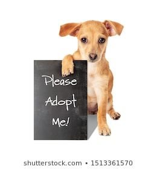
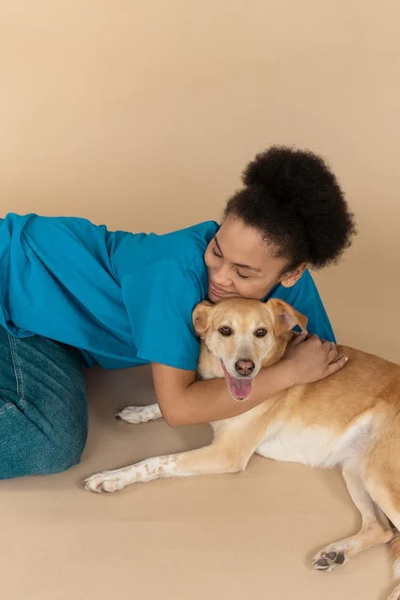

Adoption Process
.jpeg)
Step 1: Browse Pets

Step 2: Apply for Adoption
Step 3: Meet Your New Pet

Step 4: Complete the Adoption
Welcome to the Pet Adoption Center! We are dedicated to finding loving homes for pets in need. Whether you're looking to adopt a dog, cat, or any other pet, we strive to make the adoption process as simple and rewarding as possible.
Our mission is to provide a safe and welcoming environment for pets awaiting adoption, while helping them find their forever homes. We believe that every pet deserves a loving family, and we are here to connect you with your new best friend!
Our goal is to create a world where every pet has a loving home. We provide shelter, care, and adoption services to animals in need, while promoting responsible pet ownership in our community.
Step 1: Browse Pets
Step 2: Apply for Adoption
Step 3: Meet Your New Pet
Step 4: Complete the Adoption
If you're passionate about animals and want to help make a difference, consider joining our team! We are always looking for volunteers and staff to help us care for our pets and assist with adoption events.
Contact Us to JoinTo adopt a pet, browse our available pets on the website, fill out an adoption application, and schedule a meeting with the pet of your choice. If everything goes well, we will complete the adoption process!
Our adoption fees vary depending on the pet, but they typically cover vaccinations, spaying/neutering, and other medical expenses.
Yes! We encourage pet adoption from all types of living situations. Some pets may be better suited for apartments, and we can help guide you in finding the right pet for your home.